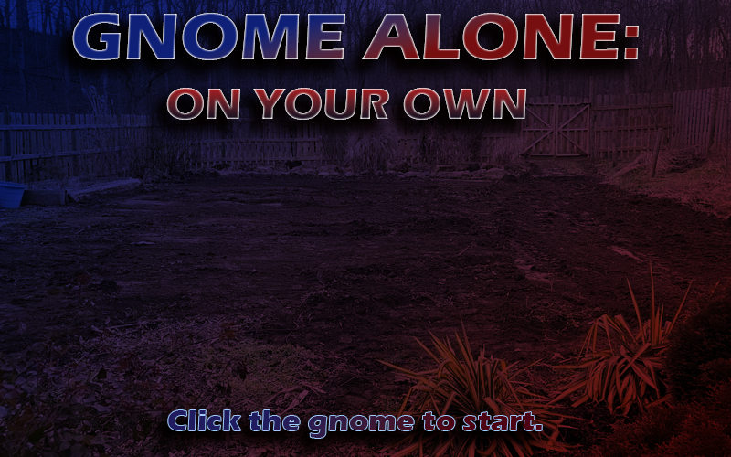
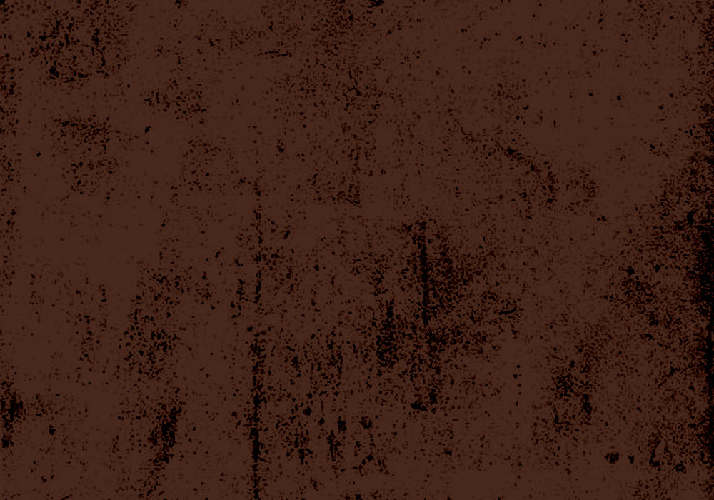
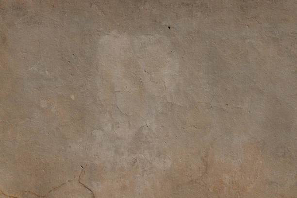
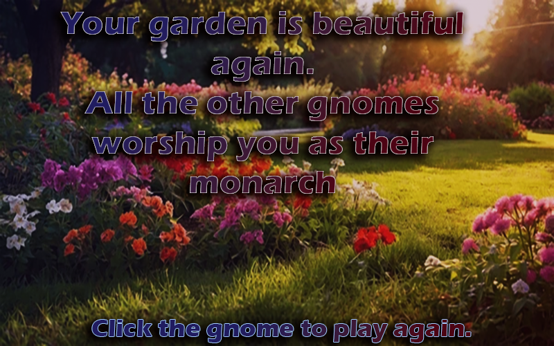
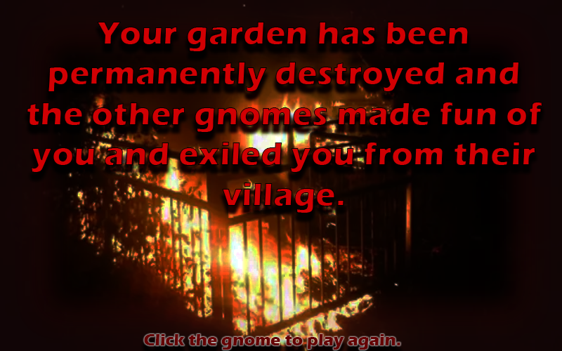
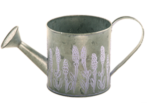
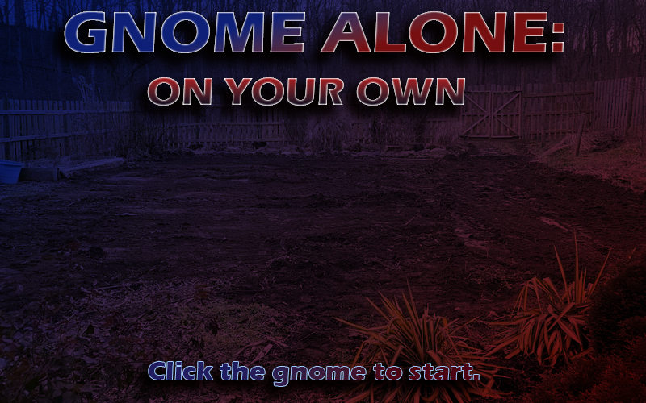
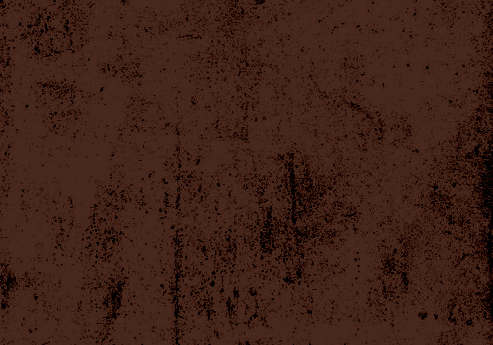
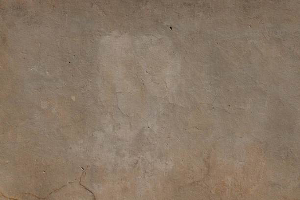
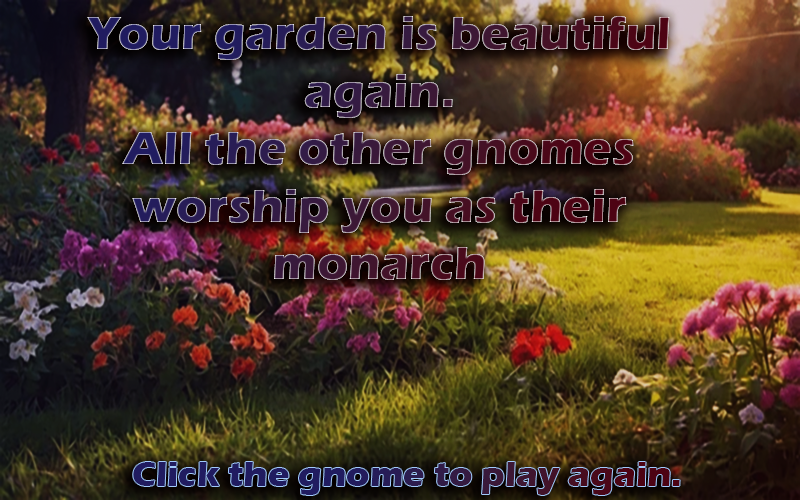
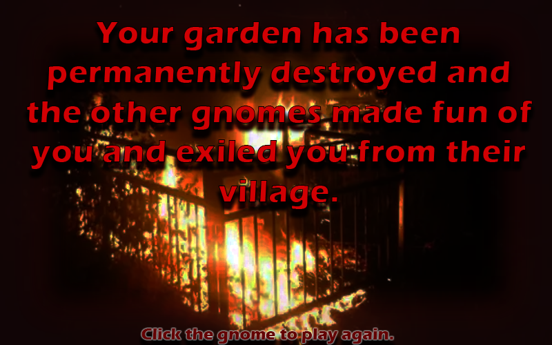
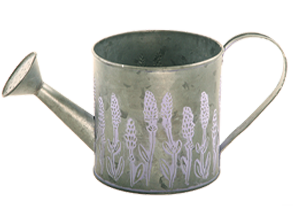
Press the play button on the audio after you click to start.
You are a legendary gnome. The humans have destroyed your precious Garden of Glory, and your gnome subjects who once worshipped you and your garden now belittle you. You must collect four Holy Gardening Water to repair the damages and regain your subject's loyalty.
Good luck.
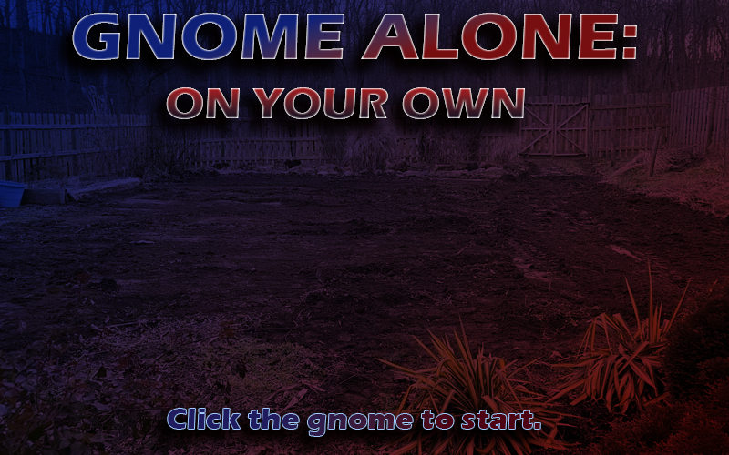
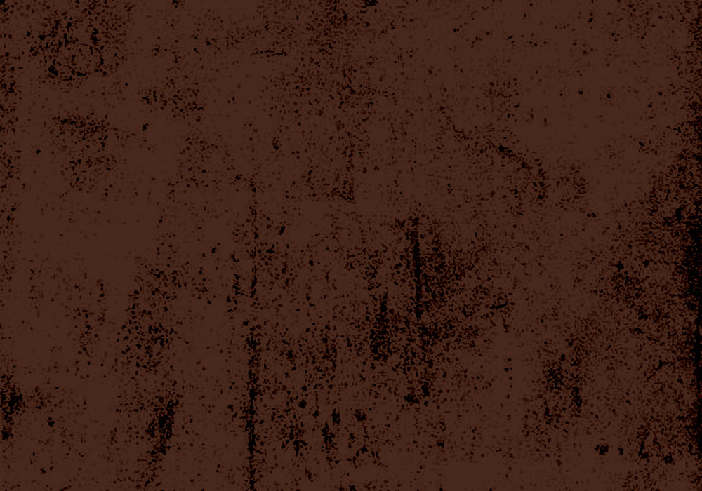
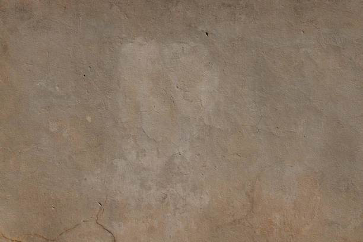
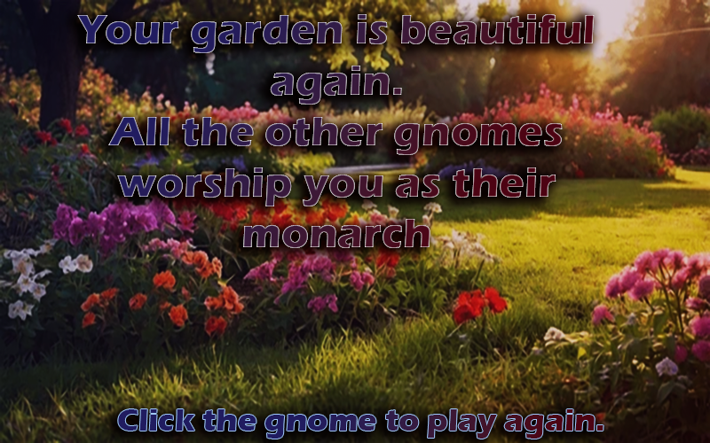
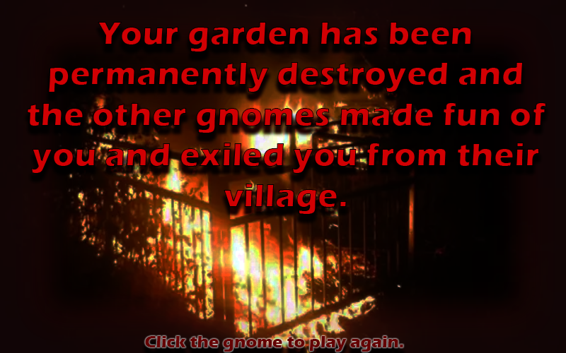
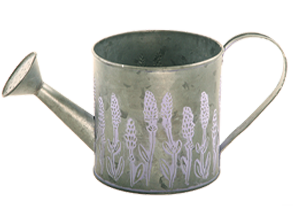